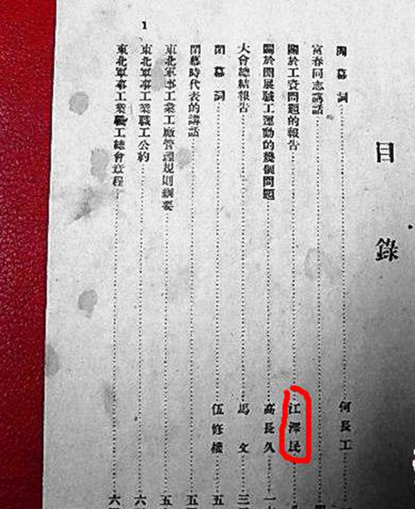
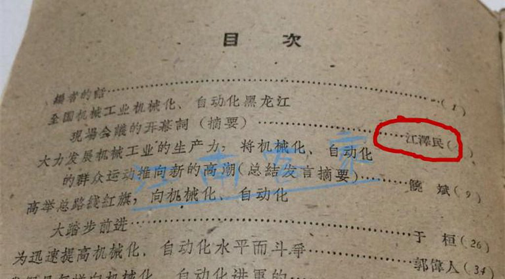

本文试图选取 1949 到 2003 年人民日报为样本，使用内容分析法，对特定时间段内关于长者的所有文字报道，包括新闻、 社论、评论和通讯等，通过关键人物、事件的出现频率和划分， 来还原出长者在这份严肃报纸里的形象。
第一次出现在人民日报
1980 年 9 月的人民日报「两会」报道里，有一篇叫《岳希新、江泽民委员说：经济建设要发扬民主，实事求是》。熟悉人 民日报两会报道的都知道，1978 年之前的两会报道多在会议议 程上打转转，拘泥于开幕、报告、贺电等，而 1978 年后，报道 方式逐渐多样，代表言之有物的发言和讨论逐渐增多，在报道上 也不单个罗列发言内容，而是总结几人发言的提要，于是长者在 人民日报上的初试啼声也得益于新闻报道的变革，这篇短短的报 道里只摘取了长者的一段话，他说「过去三线建设强调得厉害， 现在又丢得光光的，过了头，应该好好研究一线怎样帮助二三线。 搞四化建设，要螺旋式上升，不怕慢，就怕站，就怕弯。我们工 作要扎扎实实，不能想入非非，不能搞『一刀切』，要分别情况， 实事求是。」
长者为什么独就三线建设建言献策呢，笔者试图捋清一条脉 络，长者五十年代在上海第二设计分局电器专业科担任科长，时 间不长，短短几年，而后二院于 1970 年响应号召参加三线建设， 搬迁至贵州遵义在深山老林里埋头苦干了十年，其中艰辛可想而知，而 1980 年三线建设戛然而止，该院内迁，想必在落户、待 遇上遇到些问题，长者是有情有义之人，故发言为二十多年前一 起共事过几年的老同事讨个说法，一个猜想，一定对。2001 年 该所迁到杭州，成立中国联合工程公司，2009 年请长者去故地 重游，诞生了那段仅次于怒斥港媒的视频，其中那句「你们给我 搞的这个啊，excited!」也是回味无穷。
唯一的一篇「负面报道」
没错，中共中央机关报刊登过长者的负面报道，这篇隐晦的 报道稍不留神就会错过，因为那位作者用了「某某市长」，相当 于不公开的点名了。
事情从上海说起，八十年代以来的上海城市基础设施建设和 公共服务积弊已久，民生方面的负面新闻不断见诸媒体，于是从 1986 年开始，长者便经常召集市里所有主要媒体的高级编辑开 会，但这并没有改善沪上媒体与市政府的关系，三年后的「导报 事件」便是一证，在此不表。
导火索是 1987 年 5 月 4 日，长者和人民代表开会，会后一 名代表向他抱怨新客站附近的一个水管往街道上漏水，将近一年 也无人理会，「因此他回到办公室后，便找到地方供水局，向他 们叫喊，找个人把那个水管了！」据说水管当天便修好了，这本 可以写篇《市长亲自过问民生小事 当场督促职能部门解决》的 正面报道，而时任上海市委机关报《解放日报》的记者许锦根却 另有想法，他写个稿子给《人民日报》头版的「每周论坛」栏目， 而该报的编辑都熟知许锦根的作品，当即拍板同意照发。
于是这篇题为《事必躬亲的另一面》的专栏文章后来出现在 1987 年 7 月 6 日的《人民日报》上，对长者高压干涉一件行政 管理小事尖刻指控道，「领导干部参与每一件小事是非常不正常 的，这只会在下级干部中间造成依赖和拖延的作风。领导干部下 去解决问题应该抓住这个要害，使大家各守其位，各司其职，从 根本上解决办事效率低的问题。」，文章结尾更露骨地评判长者， 影射他曾经压减出租车费的行动，「全国一些报纸不断载出，表 彰某些市长解决出租收费过高的问题，但是如果这种事情继续下 去，还要物价局局长或者出租车公司的总经理干什么呢？」
后来长者看到报道出街后便给该记者手书三页回信（如图）， 先肯定了记者的批评，而后写到「我对你的文章有点意见就是我 不能像汉宣帝刘询的丞相丙吉那样看见打群架的就死伤横路，并 不过问。」个人认为这个「丙吉问牛」的典故用的相当棒，堪比去年广东高院针对打击网络谣言发的那句「子产不毁乡校」，也 算比较完美的解决了此次舆论风波。而媒体敢于捅到央媒质疑本 埠主官，长者不打击不报复，回信据理力争，也算八十年代中后 期相对宽松的舆论环境的独有景象。
长者送「长者」
可能人民日报在所有关于长者的报道中，只有这一篇题为 《著名汽车工程专家江泽民逝世》最为特殊，不要以为喉舌搞了 个大新闻，其实，此长者非彼长者，报道中说他是中国共产党优 秀党员、久经考验的忠诚的共产主义战士，虽没有无产阶级革命 家谥号加冕，但八十年代逝世的领导人通常能称家的，也就是早 期担任过中央领导的，所以这位老革命获得的礼遇也是相当高了， 并且杨尚昆、姚依林、宋任穷等大佬亲自参加遗体告别仪式，在 送花圈的名单里，桥牌君、月月鸟、陈云、万里等巨头也应有尽 有，而长者也在其中，想必他只恨当时仅位列政治局委员而无法 将其名字变为敏感词。唯一可以抚平长者郁闷心情的是另外一个 江享年 86 岁，而长者早已轻松迈过了这道坎。
再细看履历这位与长者同名的人与长者颇有些相同之处，都 在苏联工作学习过，都在一汽干过、都在一机部工作，所以这里 产生了一个有趣的细节，其 75 年平反后任一机部顾问，而 70 年 8 月，汪雨的父亲把长者从郁郁不得志的武汉热工所调到他所 在一机部，这样，起码有五年时间里，一机部里是有两位「江泽民同志」的。
此后又过了二十五年，我们躬逢盛世，最近再次看到了两个 「周永康」同时被捕的新闻，历史就是这么有趣。
注:关于这个历史上同名的江泽民，也是个名副其实的长者， 其 1920 年赴法勤工俭学，1926 年毕业于比利时沙洛瓦劳动大学 机 械系，1928 年毕业于莫斯科中山大学，和邓小平一起去的法 国，是同学，入团介绍人是聂荣臻、刘伯坚。抗战时期在延安担 任中央军委后勤部军事工业局技术处长、秘书长，解放战争时期， 他任东北军区军事工业部副部长、代部长等职。建国之后，他先 后担任第一任驻苏商务参赞、一机部汽车工业局副局长、一机部 部长助理。后来笔者发现 1948 年东北军工第一届职工代表大会 汇刊里有江泽民关于工资问题的报告。  此外，在一本全国机械工业机械化、自动化黑龙江现场会议 资料汇编里也发现了他的讲话。  李鹏的回忆录里提到，为了区别，称前者为「老江泽民」， 还有人称呼他为「江克明」。「江克明」痴长长者 23 岁，一个 「江津」人，一个「江都」人，同样手持机械系工程师文凭，苏 联学习，一汽工作，一机部任职，每一步的脚印都提前踩好，俨 然世界上另一个自己。有趣有趣。